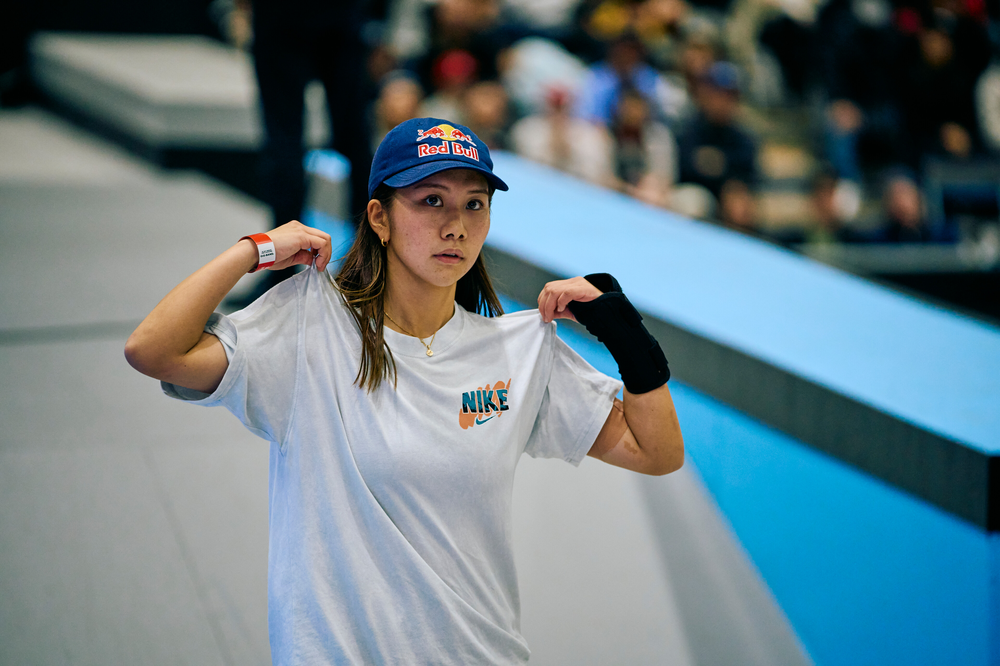

O Mundial de Skate Street 2026 terminou neste domingo, 18 de outubro, em Assunção, no Paraguai, com dois títulos para o Japão e um desfecho especialmente eletrizante na final masculina.
O Brasil teve quatro representantes nas decisões, mas terminou sem medalhas. Giovanni Vianna alcançou a quarta colocação masculina, enquanto Ivan Monteiro ficou em sexto. Na disputa feminina, Maria Lúcia Rocha foi a melhor brasileira, terminando em quinto lugar. Rayssa Leal, uma das principais atrações da competição, encerrou sua participação na sétima posição.
Antes das decisões em Assunção, a competição já havia mostrado o nível técnico das fases. As semifinais do Mundial garantiu quatro representantes nacionais nas finais. Apesar das boas classificações, nenhum deles conseguiu transformar a presença na decisão em medalha.
O principal destaque das finais foi o contraste entre as apresentações nas voltas e o aproveitamento nas manobras individuais. Na decisão masculina, somente três dos oito finalistas conseguiram registrar pontuação válida nas best tricks.
Título mundial na última manobra
A final masculina teve um roteiro marcado pela dificuldade dos competidores em executar as manobras individuais. O japonês Ginwoo Onodera começou com 90,14 pontos em sua melhor volta, mas precisou de uma apresentação decisiva na fase de best tricks para conquistar o ouro.
Na última tentativa, Onodera conseguiu uma manobra avaliada em 92,12 pontos. A nota elevou seu total para 182,26 e garantiu o título mundial.
O sul-coreano Juni Kang terminou com a prata, somando 179,32 pontos. Sua campanha na decisão teve uma volta de 89,21 e uma best trick de 90,11, demonstrando equilíbrio entre as duas partes da apresentação.
A medalha de bronze ficou com outro japonês, Taiga Nagai, que somou 166,18 pontos. Nagai recebeu 83,09 tanto na melhor volta quanto na melhor manobra individual.
Resultado completo:
- Ginwoo Onodera (Japão) — 182,26 pontos
- Juni Kang (Coreia do Sul) — 179,32 pontos
- Taiga Nagai (Japão) — 166,18 pontos
- Giovanni Vianna (Brasil) — 85,34 pontos
- Angelo Caro (Peru) — 83,27 pontos
- Ivan Monteiro (Brasil) — 74,33 pontos
- Kairi Netsuke (Japão) — 73,34 pontos
- Toa Sasaki (Japão) — 68,97 pontos
Entre os brasileiros, Giovanni Vianna obteve o melhor resultado na final masculina. Sua nota de 85,34 pontos na fase de voltas o colocou em condições de disputar posições importantes na classificação. No entanto, o brasileiro não conseguiu acrescentar pontuação nas best tricks.
Ivan Monteiro também não conseguiu pontuar nas manobras individuais. Com 74,33 pontos obtidos em sua melhor volta, encerrou a decisão na sexta posição.
A classificação brasileira refletiu diretamente o peso das best tricks. Giovanni e Ivan conseguiram completar apresentações que renderam pontos nas voltas, mas não encontraram a mesma eficiência na etapa seguinte.
Yumeka Oda confirma força japonesa
A japonesa conquistou o ouro com 170,94 pontos, resultado da combinação entre uma volta de 82,21 e uma manobra individual avaliada em 88,73.
A australiana Chloe Covell terminou com a medalha de prata, alcançando 167,97 pontos. Covell fez a melhor volta da final feminina, com 89,74, mas sua nota de 78,23 na best trick não foi suficiente para superar Yumeka na soma final.
O bronze ficou com a também japonesa Coco Yoshizawa, que terminou com 159,26 pontos, após registrar 75,46 na volta e 83,80 na melhor manobra.
O Japão ainda teve Liz Akama na quarta posição, completando uma presença expressiva do país entre as primeiras colocadas.
Resultado completo da final feminina:
- Yumeka Oda (Japão) — 170,94 pontos
- Chloe Covell (Austrália) — 167,97 pontos
- Coco Yoshizawa (Japão) — 159,26 pontos
- Liz Akama (Japão) — 154,63 pontos
- Maria Lúcia Rocha (Brasil) — 113,17 pontos
- Jiyul Shin (Coreia do Sul) — 90,42 pontos
- Rayssa Leal (Brasil) — 77,11 pontos
- Cora Wilton (Austrália) — 0,22 ponto(não participou da final devido a uma lesão)
Maria Lúcia Rocha terminou como a brasileira mais bem colocada na decisão feminina, conquistando a quinta posição com 113,17 pontos.
A skatista registrou 38,50 pontos em sua melhor volta, mas conseguiu elevar significativamente sua pontuação ao receber 74,67 em uma manobra individual.
Rayssa Leal termina em sétimo
A brasileira obteve sua pontuação válida na fase de voltas, mas não conseguiu acrescentar uma nota de best trick ao resultado.
O desempenho contrastou com o das quatro primeiras colocadas, que registraram pontuações importantes nas duas etapas da decisão.
A ausência de nota nas manobras individuais foi especialmente determinante. Mesmo tendo uma volta superior à de Maria Lúcia, Rayssa acabou ultrapassada pela compatriota, que somou 74,67 pontos com sua melhor manobra.
A classificação também evidenciou a competitividade da final feminina. As quatro primeiras colocadas ultrapassaram os 150 pontos.
Abaixo a competição completa:
Japão conquista quatro das seis medalhas
O grande vencedor das decisões do skate street em Assunção foi o Japão. O país conquistou os dois títulos e terminou com quatro das seis medalhas distribuídas nas finais masculina e feminina.
Medalhistas masculinos:
- Ginwoo Onodera (Japão) — ouro
- Taiga Nagai (Japão) — bronze
Medalhistas femininas:
- Yumeka Oda (Japão) — ouro
- Chloe Covell (Austrália) — prata
- Coco Yoshizawa (Japão) — bronze
O Brasil, por sua vez, encerrou as decisões sem subir ao pódio, mas com quatro atletas entre os oito melhores de suas respectivas categorias.
O Mundial de Skate Street 2026 terminou, assim, com duas histórias que ajudam a definir a competição: o domínio japonês e uma final masculina decidida nas manobras individuais, em que somente três skatistas conseguiram pontuar.
Los Angeles 2028: o grande objetivo do skate brasileiro
Com o encerramento do Mundial de Skate Street 2026 no Paraguai, as atenções se voltam para os Jogos Olímpicos de LA28. A competição faz parte da caminhada classificatória rumo à próxima Olimpíada, em um processo que começou em junho de 2026 e seguirá até junho de 2028. Os resultados obtidos ao longo desse período serão fundamentais na definição das vagas olímpicas.
Para o Brasil, o Mundial deixou resultados importantes, mas também desafios. Rayssa Leal segue como uma das principais referências internacionais e busca chegar à sua terceira participação olímpica. Maria Lúcia Rocha mostrou potencial ao alcançar o quinto lugar, enquanto Giovanni Vianna e Ivan Monteiro reforçaram a presença brasileira entre os finalistas masculinos.
O domínio japonês em Assunção também deixou um recado para a sequência do ciclo olímpico. Com quatro das seis medalhas disponíveis, o Japão mostrou que continuará sendo um adversário de peso na disputa por pódios internacionais.
Até Los Angeles 2028, o desafio brasileiro será transformar a presença constante nas finais em resultados mais expressivos. O Mundial do Paraguai não definiu o destino olímpico de ninguém, mas ofereceu um retrato da competitividade que os skatistas encontrarão pelo caminho. Para o Brasil, a missão continua: chegar a Los Angeles com força para disputar medalhas nas duas categorias do street.